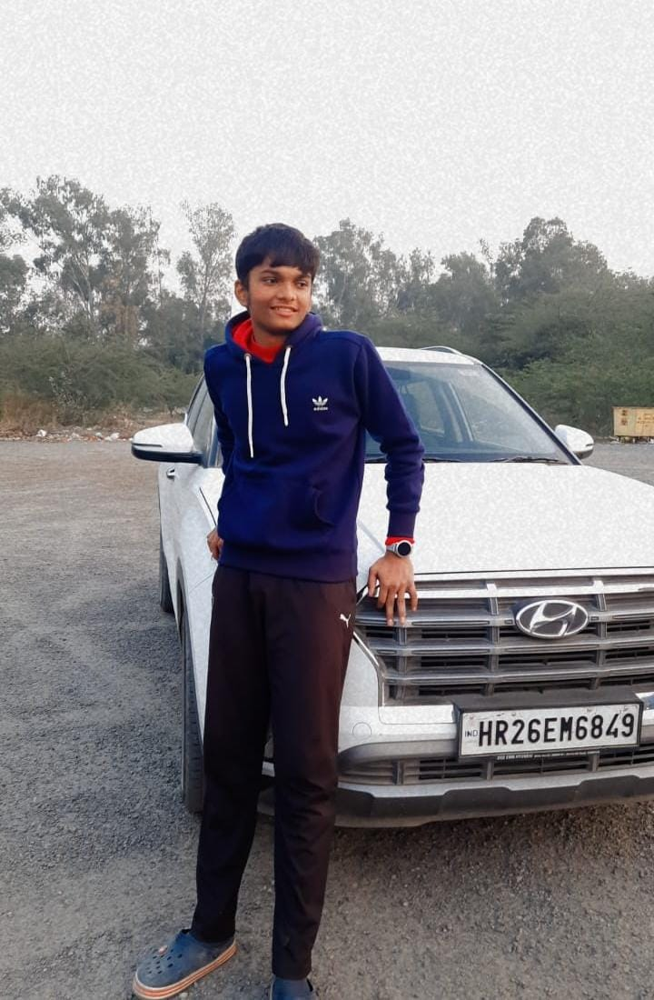

Photo to be added
Shaksham
Documentation & Reporting (Leader)
Maintains project documentation, coordinates team tasks, follows up on work, and tracks progress.
Arpita
Coder
Builds and organizes the website, manages its code, and implements AI features.

Sidharth
Data Collector
Collects and prepares images and other data for training and demonstrating the AI model.
Photo to be added
Shubham
Tester
Tests website features, checks that they work correctly, and reports issues that need fixing.
Yash
Video Editor
Edits project videos to make the final presentation clear, engaging, and well structured.